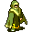

Mikhail¶Where to find Mikhail: Crossglen, Home and 1 more, Flagstone Prison, Waytogalmore 0, Flagstone Prison, Waytogalmore 0
| Type | NPC/Enemy (talks, but can also be fought) |
| Role | Starts Breakfast bread, More rats!, Rats!, Search for Andor +1 |
| Found in | Crossglen, Flagstone Prison, Flagstone Prison |
| Class | Humanoid |
| HP | 100 |
| XP when defeated | 190 |
| Introduced | v0.7.0 or earlier |
Crossglen, Home and 1 more¶
Where: Crossglen: Home, Flagstone Prison: Waytogalmore 0 · Role: Starts Breakfast bread, More rats!, Rats!, Search for Andor +1
Locations¶
| Map | Region | Up to | Notes |
|---|---|---|---|
| Home | Crossglen | 1 | – |
| Waytogalmore 0 | Flagstone Prison | 1 | – |
Quests¶
- A familiar shadow: stage 30
- Breakfast bread: stages 10, 100
- Honor your parents: stages 30, 40, 50, 60
- More rats!: stages 10, 20, 52, 54, 70, 74, 90
- Rats!: stages 10, 100
- Search for Andor: stage 1
- Unusual experiences and achievements: stage 1
- Brimhaven multipurpose story flags (hidden flag): stage 40
- Brimhaven warehouse delivery (hidden flag): stage 90
- Darkness in the Daylight and Shadows story flags (hidden flag): stage 20
- General story flags (hidden flag): stage 1
Dialogue simulator¶
Talk to Mikhail as you would in the game. When the conversation depends on your progress (a quest, an item, a dice roll…), the simulator asks you. Try another answer with Undo.
Follows the game's own conversation rules (v0.8.18).
Dialogue (69 lines)
Exactly as in the game files. Each line appears once; links jump to where a choice leads.
mikhail_start_select (silent check: the first matching branch below is taken)
- branch 1 (if reached stage 1 of Ratdom story flags (hidden flag)) → ratdom_mikhail
- branch 2 (if reached stage 100 of Breakfast bread) → mikhail_start_select2
- branch 3 (if reached stage 10 of Breakfast bread) → mikhail_bread_continue
- branch 4 → mikhail_start_select2
ratdom_mikhail (silent check: the first matching branch below is taken)
- branch 1 (if reached stage 90 of More rats!) → ratdom_mikhail_90
- branch 2 (if reached stage 20 of More rats!; NOT reached stage 52 of More rats!; NOT reached stage 54 of More rats!) → ratdom_mikhail_50
- branch 3 (if reached stage 20 of More rats!; NOT reached stage 70 of More rats!) → ratdom_mikhail_10_10
- branch 4 (if reached stage 70 of More rats!) → ratdom_mikhail_70
- branch 5 → ratdom_mikhail_01
mikhail_start_select2 (silent check: the first matching branch below is taken)
- branch 1 (if reached stage 100 of Rats!) → mikhail_start_select_default
- branch 2 (if reached stage 10 of Rats!) → mikhail_rats_continue
- branch 3 → mikhail_start_select_default
mikhail_bread_continue Mikhail: “Did you get my bread from Mara at the town hall yet?”
- “Yes, here you go.” (if hand over 1× Bread) → mikhail_bread_complete
- “No, not yet.” → mikhail_default
ratdom_mikhail_90 Dummy NPC: “The huge rat ignores you now.”
ratdom_mikhail_50 Mikhail: “Is my garden clean of filthy two-legs again?”
- “No, not yet” → conversation ends
- “Yes, I killed Mara and Tharal in the garden for you.” (if killed 1× Mara; killed 1× Tharal) → ratdom_mikhail_50_2
- “(lie) I killed Mara and Tharal in the garden for you.” (if NOT killed 1× Mara; killed 1× Tharal) → ratdom_mikhail_50_4
- “(lie) I killed Mara and Tharal in the garden for you.” (if killed 1× Mara; NOT killed 1× Tharal) → ratdom_mikhail_50_4
- “(lie) I killed Mara and Tharal in the garden for you.” (if NOT killed 1× Mara; NOT killed 1× Tharal) → ratdom_mikhail_50_4
ratdom_mikhail_10_10 Mikhail: “And I am hungry. Go to the town hall and bring me some bread.” — effects: sets stage 70 of More rats!
- “OK.” → conversation ends
- “Forget it.” → conversation ends
- “Here I have some bread for you.” (if hand over 1× Bread) → ratdom_mikhail_10_20
ratdom_mikhail_70 Mikhail: “Where is my bread? Why does it need to take so long?”
- “Just a minute.” → conversation ends
- “Forget it.” → conversation ends
- “Here I have some bread for you.” (if hand over 1× Bread) → ratdom_mikhail_74
- “Hey - I have brought some bread already.” (if reached stage 74 of More rats!) → ratdom_mikhail_80
ratdom_mikhail_01 Mikhail: “Good. You are awake at last.”
- “A rat? Here?” → ratdom_mikhail_02
mikhail_start_select_default (silent check: the first matching branch below is taken)
- branch 1 (if reached stage 1 of Search for Andor) → mikhail_default
- branch 2 → mikhail_gamestart
mikhail_rats_continue Mikhail: “Did you kill those two rats in our garden?”
- “Yes, I have dealt with the rats now.” (if hand over 2× Small rat tail) → mikhail_rats_complete
- “No, not yet.” → mikhail_rats_start2
mikhail_bread_complete Mikhail: “Thanks a lot, now I can make my breakfast. Here, take these coins for your help.” — effects: sets stage 100 of Breakfast bread, gives Gold coins
- Next → mikhail_default
mikhail_default Mikhail: “Anything else I can help you with?”
- “Do you have any more tasks for me?” (if reached stage 100 of Breakfast bread; reached stage 100 of Rats!) → mikhail_all_tasks_done
- “Do you have any more tasks for me?” (if reached stage 100 of Breakfast bread; NOT reached stage 100 of Rats!) → mikhail_bread_done
- “Do you have any more tasks for me?” (if NOT reached stage 100 of Breakfast bread; reached stage 100 of Rats!) → mikhail_rats_done
- “Do you have any tasks for me?” (if NOT reached stage 100 of Breakfast bread; NOT reached stage 100 of Rats!) → mikhail_tasks
- “Is there anything else you can tell me about Andor?” → mikhail_andor1
- “I have a present for you.” (if reached stage 20 of Honor your parents; NOT reached stage 40 of Honor your parents; NOT reached stage 50 of Honor your parents; NOT reached stage 60 of Honor your parents; reached stage 40 of Brimhaven multipurpose story flags (hidden flag)) → mikhail_present_20
- “I have a present for you.” (if reached stage 20 of Honor your parents; NOT reached stage 40 of Honor your parents; NOT reached stage 50 of Honor your parents; NOT reached stage 60 of Honor your parents; NOT reached stage 40 of Brimhaven multipurpose story flags (hidden flag)) → mikhail_present_10
- “I was searching for Andor.” → mikhail_news_10
- “What kind of book is it that you have in your hand?” (if NOT reached stage 1 of General story flags (hidden flag); NOT reached stage 1 of Unusual experiences and achievements; reached stage 100 of Breakfast bread; reached stage 100 of Rats!) → mikhail_achievements_10
- “Yes, I'm here to deliver the order for a 'Plush Pillow'. But what for?” (if hand over 1× Plush pillow; reached stage 10 of Delivery; reached stage 100 of Delivery) → brv_wh_delivery_mikhail
- “I don't know...something feels wrong. I thought maybe you were in danger.” (if latest stage of A familiar shadow is 20) → galmore_marked_stone_mikhail
ratdom_mikhail_50_2 (silent check: the first matching branch below is taken) — effects: sets stage 52 of More rats!
- branch 1 → ratdom_mikhail_50_10
ratdom_mikhail_50_4 (silent check: the first matching branch below is taken) — effects: sets stage 54 of More rats!
- branch 1 → ratdom_mikhail_50_10
ratdom_mikhail_10_20 Mikhail: “It's about time.” — effects: sets stage 74 of More rats!
- “What - no thanks? Rats.” → conversation ends
ratdom_mikhail_74 (silent check: the first matching branch below is taken) — effects: sets stage 74 of More rats!
- branch 1 (if reached stage 52 of More rats!) → ratdom_mikhail_80
- branch 2 (if reached stage 54 of More rats!) → ratdom_mikhail_80
- branch 3 → ratdom_mikhail_10_20
ratdom_mikhail_80 Mikhail: “Good! Now I don't need you anymore!” — effects: sets stage 90 of More rats!
- “OK.” → conversation ends
- “I would have gone anyway.” → conversation ends
ratdom_mikhail_02 Mikhail: “As you see. Did you find your brother Andor already? He hasn't been back home for a while now.”
- “Eh, what? No, I am still looking for Andor.” → ratdom_mikhail_03
mikhail_gamestart Mikhail: “Oh good, you are awake.”
- Next → mikhail_visited
mikhail_rats_complete Mikhail: “Oh you did? Wow, thanks a lot for your help! Please take Andor's training shield - you're going to need it. If you are hurt, use your bed over there to rest and regain your strength.” — effects: sets stage 100 of Rats!, gives 1× Kid's shield
- Next → mikhail_default
mikhail_rats_start2 Mikhail: “If you get hurt by the rats, come back here and rest in your bed. That way you can regain your strength.”
- Next → mikhail_rats_start2a
mikhail_all_tasks_done Mikhail: “Not for now. Thanks for taking care of the bread and rats.”
- “Never mind, let's talk about the other things.” → mikhail_default
mikhail_bread_done Mikhail: “Thanks for getting me the bread. There are still the rats.”
- “What about the rats?” → mikhail_rats_select
- “Never mind, let's talk about the other things.” → mikhail_default
mikhail_rats_done Mikhail: “Thanks for taking care of the rats. I'd still love some bread.”
- “What about the bread?” → mikhail_bread_select
- “Never mind, let's talk about the other things.” → mikhail_default
mikhail_tasks Mikhail: “Oh yes, there were some things I need help with, bread and rats. Which one would you like to talk about?”
- “What about the bread?” → mikhail_bread_select
- “What about the rats?” → mikhail_rats_select
- “Never mind, let's talk about the other things.” → mikhail_default
mikhail_andor1 Mikhail: “As I said, Andor went out and hasn't been back since. I worry about him. Please go look for your brother. He said he would only be out for a short while.”
- Next → mikhail_andor2
mikhail_present_20 Mikhail: “Oh, you are such a nice child.”
- “[Give him the cheap necklace]” (if hand over 1× Necklace for father (cheap)) → mikhail_present_20_1
- “[Give him the necklace]” (if hand over 1× Necklace for father) → mikhail_present_20_2
- “[Give him the expensive necklace]” (if hand over 1× Necklace for father (expensive)) → mikhail_present_20_3
- “Maybe I promised too much.” (if NOT carry 1× Necklace for father (cheap); NOT carry 1× Necklace for father; NOT carry 1× Necklace for father (expensive)) → mikhail_default
mikhail_present_10 Mikhail: “I asked you to search for your brother Andor and you did not find out anything and instead you are bringing me a necklace? Go and search for your brother!” — effects: sets stage 30 of Honor your parents
- “Sorry father. I will go and search for Andor.” → mikhail_default
mikhail_news_10 Mikhail: “Did you find out something?”
- “I asked around in Crossglen and they sent me to Fallhaven.” (if reached stage 30 of Search for Andor) → mikhail_news_20
- “Someone in Fallhaven told me that he met Andor and that he was searching for a man called Lodar.” (if NOT reached stage 30 of Search for Andor; reached stage 55 of Search for Andor) → mikhail_news_30
- “I met a man called Lodar and he told me that Andor probably went to Nor City.” (if NOT reached stage 30 of Search for Andor; NOT reached stage 55 of Search for Andor; reached stage 80 of Search for Andor) → mikhail_news_40
- “No I did not find out anything yet.” (if NOT reached stage 30 of Search for Andor; NOT reached stage 55 of Search for Andor; NOT reached stage 80 of Search for Andor) → mikhail_default
- “I found Andor far north of here, at a fruit seller's stand.” (if reached stage 310 of Darkness in the Daylight; NOT reached stage 20 of Darkness in the Daylight and Shadows story flags (hidden flag)) → mikhail_news_60
- “I found Andor far south of here, at Alynndir's house.” (if reached stage 290 of Shadows; NOT reached stage 20 of Darkness in the Daylight and Shadows story flags (hidden flag)) → mikhail_news_60
mikhail_achievements_10 Mikhail: “Just like my father once did, I want to give you a book to take with you on your way.”
- Next → mikhail_achievements_20
brv_wh_delivery_mikhail Mikhail: “Oh wow! Finally, your brother's gift has arrived and we only have to wait for his arrival.” — effects: clears stage 100 of Delivery, sets stage 90 of Brimhaven warehouse delivery (hidden flag)
- “Sigh. I hope so.” → brv_wh_delivery_mikhail2
- “What?! Where's my gift?” → brv_wh_delivery_mikhail3
galmore_marked_stone_mikhail Mikhail: “What's gotten into you? I'm fine, but the same can't be said for Leta. I've seen her pacing in that house of hers, muttering to herself like a madwoman. You might want to check on her.” — effects: sets stage 30 of A familiar shadow
ratdom_mikhail_50_10 (silent check: the first matching branch below is taken)
- branch 1 (if NOT reached stage 70 of More rats!) → ratdom_mikhail_10_10
- branch 2 (if NOT reached stage 74 of More rats!) → ratdom_mikhail_70
- branch 3 → ratdom_mikhail_80
ratdom_mikhail_03 Mikhail: “I should have guessed. Anyway.”
- “What are you doing in my house? Where is Mikhail?” → ratdom_mikhail_04
mikhail_visited Mikhail: “I can't seem to find your brother Andor anywhere. He hasn't been back since he left yesterday.” — effects: sets stage 1 of Search for Andor
- Next → mikhail3
mikhail_rats_start2a Mikhail: “Another way to regain your strength is to eat some food. You can buy some for yourself from Mara at the town hall. But watch out - I hear that raw meat can sometimes give you food poisoning.”
- Next → mikhail_rats_start2b
mikhail_rats_select (silent check: the first matching branch below is taken)
- branch 1 (if reached stage 100 of Rats!) → mikhail_rats_complete2
- branch 2 (if reached stage 10 of Rats!) → mikhail_rats_continue
- branch 3 → mikhail_rats_start
mikhail_bread_select (silent check: the first matching branch below is taken)
- branch 1 (if reached stage 100 of Breakfast bread) → mikhail_bread_complete2
- branch 2 (if reached stage 10 of Breakfast bread) → mikhail_bread_continue
- branch 3 → mikhail_bread_start
mikhail_andor2 Mikhail: “Maybe he went into that supply cave again and got stuck. Or maybe he's in Leta's basement training with that wooden sword again. Please go look for him in town.”
- Next → mikhail_default
mikhail_present_20_1 Mikhail: “Hm, thank you. Looks like you spent all your pocket money for this.” — effects: sets stage 40 of Honor your parents
- Next → mikhail_default
mikhail_present_20_2 Mikhail: “Thank you my child for this wonderful necklace. Oh and it is in our family colors!” — effects: sets stage 50 of Honor your parents
- Next → mikhail_default
mikhail_present_20_3 Mikhail: “Oh, where did you get the money to buy this? Maybe I don't want to know...” — effects: sets stage 60 of Honor your parents
- Next → mikhail_default
mikhail_news_20 Mikhail: “Did you go the dangerous way to Fallhaven?” — effects: sets stage 40 of Brimhaven multipurpose story flags (hidden flag)
- “Yes and someone in Fallhaven told me that he met Andor and that he was searching for a man called Lodar.” (if reached stage 55 of Search for Andor) → mikhail_news_30
- “Then I met a man called Lodar and he told me that Andor probably went to Nor City.” (if NOT reached stage 55 of Search for Andor; reached stage 80 of Search for Andor) → mikhail_news_40
- “Not yet.” (if NOT reached stage 80 of Search for Andor; NOT reached stage 55 of Search for Andor) → mikhail_news_50
mikhail_news_30 Mikhail: “Did you find this Lodar?” — effects: sets stage 40 of Brimhaven multipurpose story flags (hidden flag)
- “Yes, and he told me that Andor probably went to Nor City.” (if reached stage 80 of Search for Andor) → mikhail_news_40
- “No, not yet.” (if NOT reached stage 80 of Search for Andor) → mikhail_news_50
mikhail_news_40 Mikhail: “Did you go to Nor City?” — effects: sets stage 40 of Brimhaven multipurpose story flags (hidden flag)
- “No, not yet.” → mikhail_news_50
mikhail_news_60 Mikhail: “Great! But where is he?”
- “He just said that he couldn't come now. Then he ran away before I could ask him what he was up to.” → mikhail_news_62
mikhail_achievements_20 Mikhail: “This book is some kind of diary, in which you can record unusual experiences and achievements that you may have on your way.”
- Next → mikhail_achievements_30
brv_wh_delivery_mikhail2 Mikhail: “Anyway, it's been a very long time so please go look for your brother.”
- “OK, bye.” → conversation ends
- “I'm still looking for him.” → conversation ends
- “Eh, you have to pay for it...” → brv_wh_delivery_mikhail4
brv_wh_delivery_mikhail3 Mikhail: “I already gave you his shield.”
- Next → brv_wh_delivery_mikhail2
ratdom_mikhail_04 Mikhail: “We rats took over this village. I am Gruiik, their leader.” — effects: sets stage 10 of More rats!
- Next → ratdom_mikhail_10
mikhail3 Mikhail: “Never mind, he will probably be back soon.”
- Next → mikhail_default
mikhail_rats_start2b Mikhail: “If that happens, perhaps the town priest can do something to help you. Otherwise, just rest until you feel better.”
- Next → mikhail_rats_start2c
mikhail_rats_complete2 Mikhail: “Thanks for your help with the rats earlier. If you are hurt, use your bed over there to rest and regain your strength.”
- Next → mikhail_default
mikhail_rats_start Mikhail: “I saw some rats out back in our garden earlier. Could you please go kill any rats that you see out there?” — effects: sets stage 10 of Rats!
- “I have already dealt with the rats.” (if hand over 2× Small rat tail) → mikhail_rats_complete
- “OK, I'll go check out in our garden.” → mikhail_rats_start2
mikhail_bread_complete2 Mikhail: “Thanks for the bread earlier.”
- “You're welcome.” → mikhail_default
mikhail_bread_start Mikhail: “Oh, I almost forgot. If you have time, please go see Mara at the town hall and buy me some more bread.” — effects: sets stage 10 of Breakfast bread
- Next → mikhail_default
mikhail_news_50 Mikhail: “Thank you my child. Keep on searching for Andor.”
- Next → mikhail_default
mikhail_news_62 Mikhail: “[While shaking his head] Oh $playername, you have disappointed me.”
- Next → mikhail_news_64
mikhail_achievements_30 Mikhail: “Would you like to have it?”
- “Yes, sounds great.” → mikhail_achievements_50
- “No, thanks.” → mikhail_achievements_40
brv_wh_delivery_mikhail4 Mikhail: “Ah, yes, I almost forgot. Here you are.” — effects: gives 10× Gold coins
- “Thanks. I'm on my way again, bye.” → conversation ends
- “Hmm... Bye” → conversation ends
ratdom_mikhail_10 Mikhail: “However, there are two-legs running around in my garden again. Go and kill them.” — effects: sets stage 20 of More rats!
- “I'll have a look.” → ratdom_mikhail_10_10
- “I would never do that!” → ratdom_mikhail_10_10
mikhail_rats_start2c Mikhail: “Me, I can't really afford the meat, so I just stick to my bread!”
- Next → mikhail_rats_start3
mikhail_news_64 Valentina: “Mikhail! Don't you dare talk to our child like that!” — effects: sets stage 20 of Darkness in the Daylight and Shadows story flags (hidden flag)
- “I better go.” → mikhail_news_66
- “Sigh.” → mikhail_news_66
mikhail_achievements_50 Mikhail: “Here you are.” — effects: sets stage 1 of Unusual experiences and achievements
mikhail_achievements_40 Mikhail: “No problem. I won't bother you with it again.” — effects: sets stage 1 of General story flags (hidden flag)
mikhail_rats_start3 Mikhail: “Also, don't forget to check your inventory. You probably still have that old ring I gave you. Make sure you wear it.”
- “OK, I understand. I can rest here if I get hurt, and I should check my inventory for useful items.” → mikhail_rats_start3a
mikhail_news_66 Mikhail: “[Loudly complaining] When shall we three meet Andor again?”
- “In thunder, lightning or on rain?” → conversation ends
- “Now I'm definitely going.” → conversation ends
mikhail_rats_start3a Mikhail: “One more thing: Look at that basket on the floor over there. It belongs to Andor and he might have left something useful inside.”
- Next → mikhail_default
Version history¶
| Version | Change |
|---|---|
| v0.7.0 | Present in v0.7.0 (earliest release tracked) |
| v0.7.2 | Dialogue: 6 lines added, 9 lines changed |
| v0.7.4 | Dialogue: 1 line changed · text: “As I said, Andor went out yesterday and hasn't been back since. I'm s…” → “As I said, Andor went out and hasn't been back since. I worry about h…” |
| v0.7.10 | Dialogue: 1 line changed |
| v0.7.11 | Dialogue: 10 lines added, 1 line changed |
| v0.7.12 | Dialogue: 4 lines changed · text: “Thank you my son. Keep on searching for Andor.” → “Thank you my child. Keep on searching for Andor.” · text: “Thank you my son for this wonderful necklace. Oh and it is in our fam…” → “Thank you my child for this wonderful necklace. Oh and it is in our f…” |
| v0.7.13 | Dialogue: 5 lines added, 1 line changed |
| v0.7.17 | Dialogue: 4 lines added, 1 line changed |
| v0.8.5 | Dialogue: 17 lines added, 2 lines changed |
| v0.8.6 | Dialogue: 1 line changed · text: “One more thing: Look at that basket on the floor over there. It belon…” → “One more thing: Look at that basket on the floor over there. It belon…” |
| v0.8.6.1 | Dialogue: 3 lines changed |
| v0.8.7 | Dialogue: 1 line changed · text: “I saw some rats out back in our garden earlier. Could you please go k…” → “I saw some rats out back in our garden earlier. Could you please go k…” |
| v0.8.14 | Dialogue: 5 lines added, 2 lines changed |
| v0.8.15 | Chance of appearing mirrored: added (100) |
Verified against v0.8.18 and every earlier release back to v0.7.0 (game data compared release by release).
Flagstone Prison, Waytogalmore 0¶
Where: Flagstone Prison: Waytogalmore 0
Combat¶
| Class | Humanoid |
| HP | 100 |
| XP when defeated | 190 |
| Damage | 1 to 4 |
| AC | 40 |
| BC | 120 |
| DR | 5 |
| Attacks per turn | 2 (4 AP each, 10 AP) |
| Crit chance | none |
Verified against v0.8.18 monster data.
Locations¶
| Map | Region | Up to | Notes |
|---|---|---|---|
| Waytogalmore 0 | Flagstone Prison | 2 | Appears later, during a quest |
Quests that count defeats¶
- Colonel Lutarc with stepping on a trigger on Waytogalmore 0 checks that at least 2 of these enemies have been defeated.
Version history¶
| Version | Change |
|---|---|
| v0.7.2 | Added |
Verified against v0.8.18 and every earlier release back to v0.7.0 (game data compared release by release).
Flagstone Prison, Waytogalmore 0 (2)¶
Where: Flagstone Prison: Waytogalmore 0
Combat¶
| Class | Humanoid |
| HP | 100 |
| XP when defeated | 190 |
| Damage | 1 to 4 |
| AC | 40 |
| BC | 120 |
| DR | 5 |
| Attacks per turn | 2 (4 AP each, 10 AP) |
| Crit chance | none |
Verified against v0.8.18 monster data.
Locations¶
| Map | Region | Up to | Notes |
|---|---|---|---|
| Waytogalmore 0 | Flagstone Prison | 1 | Appears later, during a quest |
Quests that count defeats¶
- Colonel Lutarc with stepping on a trigger on Waytogalmore 0 checks that this enemy has been defeated.
- A conversation with stepping on a trigger on Waytogalmore 0 checks that this enemy has been defeated.
Version history¶
| Version | Change |
|---|---|
| v0.7.2 | Added |
Verified against v0.8.18 and every earlier release back to v0.7.0 (game data compared release by release).
Behind the scenes¶
How the game data handles this character. Not needed for playing.
3 entries. The game data defines 3 separate characters named Mikhail. The game makes a new entry whenever a character needs different behaviour (another conversation later in a quest, another place, other stats). Some are the same person at different points in the story; others just share a generic name. Here they differ in: conversation, location, combat statistics, movement.
| Entry | Type | Section |
|---|---|---|
mikhail |
NPC | Crossglen, Home and 1 more |
stn_colonel_mons3 |
Enemy | Flagstone Prison, Waytogalmore 0 |
stn_colonel_mons3b |
Enemy | Flagstone Prison, Waytogalmore 0 |
How the XP value is calculated
The game computes each enemy's experience value when it loads the data (MonsterTypeParser.java):
XP = ⌈(attacks per turn × attack chance × average damage × (1 + critical skill × critical multiplier) × 3 + HP × (1 + block chance) + 9 × damage resistance) × 0.7⌉
Percentages are used as fractions (e.g. 60% = 0.6). Enemies whose attacks inflict a condition are worth 50 XP more. The More Exp skill adds a percentage on top.
Technical information: mikhail
| Entry ID | mikhail |
| Type (wiki) | NPC |
| Spawn group | mikhail |
| Loot table | – |
| Conversation | mikhail_start_select |
| Faction | – |
| Movement | – |
| Icon | monsters_mage2:0 |
| Defined in | res/raw/monsterlist_crossglen_npcs.json |
Raw data:
{
"id": "mikhail",
"name": "Mikhail",
"iconID": "monsters_mage2:0",
"monsterClass": "humanoid",
"spawnGroup": "mikhail",
"phraseID": "mikhail_start_select",
"horizontalFlipChance": 100
}
Technical information: stn_colonel_mons3
| Entry ID | stn_colonel_mons3 |
| Type (wiki) | Enemy |
| Spawn group | stn_colonel_mons3 |
| Loot table | – |
| Conversation | – |
| Faction | – |
| Movement | protectSpawn |
| Icon | monsters_mage2:0 |
| Defined in | res/raw/monsterlist_stoutford_combined.json |
Raw data:
{
"id": "stn_colonel_mons3",
"name": "Mikhail",
"iconID": "monsters_mage2:0",
"maxHP": 100,
"maxAP": 10,
"moveCost": 5,
"unique": 1,
"monsterClass": "humanoid",
"movementAggressionType": "protectSpawn",
"attackDamage": {
"min": 1,
"max": 4
},
"attackCost": 4,
"attackChance": 40,
"blockChance": 120,
"damageResistance": 5
}
Technical information: stn_colonel_mons3b
| Entry ID | stn_colonel_mons3b |
| Type (wiki) | Enemy |
| Spawn group | stn_colonel_mons3b |
| Loot table | – |
| Conversation | – |
| Faction | – |
| Movement | protectSpawn |
| Icon | monsters_mage2:0 |
| Defined in | res/raw/monsterlist_stoutford_combined.json |
Raw data:
{
"id": "stn_colonel_mons3b",
"name": "Mikhail",
"iconID": "monsters_mage2:0",
"maxHP": 100,
"maxAP": 10,
"moveCost": 5,
"unique": 1,
"monsterClass": "humanoid",
"movementAggressionType": "protectSpawn",
"attackDamage": {
"min": 1,
"max": 4
},
"attackCost": 4,
"attackChance": 40,
"blockChance": 120,
"damageResistance": 5
}
Community notes¶
Written by players, not generated from game data. Observations: what players notice in-game · Lore: the in-world story · Trivia: real-world facts, references, development history · Theory / speculation: unconfirmed ideas; may just be unfinished content
Observations¶
No notes yet. Contributions are welcome: add a note.
Lore¶
No notes yet. Contributions are welcome: add a note.
Trivia¶
No notes yet. Contributions are welcome: add a note.
Theory / speculation¶
No notes yet. Contributions are welcome: add a note.
Data from v0.8.18